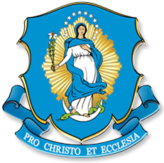
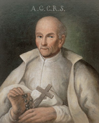

Атрымайце святога
Святы або благаслаўлёны стане вашым спадарожнікам у малітве за памерлых.

Чысты чысцецАЙЦЫ МАРЫЯНЕ Ў БЕЛАРУСІМАЛІТВА, ЯКАЯ ЗЛУЧАЕ
Тых, каго мы любім, можна падтрымліваць і пасля смерці. Няхай памяць пра іх стане малітвай.
Атрымаць святога ↗Адзін святы. Адна інтэнцыя. Ваша малітва.
Памяць, якая становіцца малітвай.
✧ПРОСТЫ КРОК ДА БЛІЖНЯГА
Святы або благаслаўлёны стане вашым спадарожнікам у малітве за памерлых.
Разам з карткай вы атрымаеце інтэнцыю. Можна памятаць таксама пра сваіх блізкіх.
Выберыце блізкую вам форму малітвы. Без лічыльнікаў і абавязковых адзнак.
МАЛІТВА ЗА ПАМЕРЛЫХ
Атрымайце святога і інтэнцыю малітвы за памерлых.
Націсніце кнопку, каб атрымаць аднаго з 35 святых і благаслаўлёных. Выбар захаваецца ў гэтым браўзеры.
МАЛІТОЎНЫ СПАДАРОЖНІК
ПРАСТОРА ДЛЯ МАЛІТВЫ
Форму малітвы вы выбіраеце самі. У праекце няма абавязковага тэксту, раскладу або штодзённай справаздачы.
ІНТЭНЦЫЯ МАЁЙ МАЛІТВЫ
Спачатку атрымайце святога — тут з’явіцца ваша малітоўная інтэнцыя.
Атрымаць святога ↗Міласэрны Божа, давяраю Тваёй любові памерлых, за якіх сёння малюся. Праз муку, смерць і ўваскрасенне Твайго Сына ачысці іх і прымі ў радасць вечнага жыцця. Праз Хрыста, Пана нашага. Амэн.
Прапанаваная малітва для асабістага ўжытку. Вы можаце выбраць іншую форму: Ружанец, Вяночак да Божай Міласэрнасці, удзел у святой Імшы або малітву сваімі словамі.
Пераклад і адаптацыя малітвы з польскай ініцыятывы «Czysty Czyściec». Тэкст прызначаны для асабістай малітвы і не замяняе свабоднага выбару яе формы.
Яшчэ адна форма малітвы на выбар. Гэты Вяночак можна ахвяраваць у інтэнцыі памерлых.
Напачатку:
Ойча наш…
Вітай, Марыя… (10 разоў).
Кожны раз пасля словаў «Святая Марыя, Маці Божая…» называем адну з цнотаў у наступным парадку:
С.: Хвала Айцу і Сыну, і Духу Святому.
Н.: Як была спрадвеку, цяпер і заўсёды, і на векі вечныя. Амэн.
С.: Пры сваім Зачацці, о Пані, Ты была Беззаганнай.
Н.: Маліся за нас да Бога Айца, бо Ягонага Ты нарадзіла Сына.
Молімся:
Божа, наш Ойча, Ты праз Беззаганнае Зачацце Найсвяцейшай Марыі Панны падрыхтаваў годнае месца прабывання для свайго Сына, а праз будучыя заслугі смерці Хрыста захаваў Яе ад усялякага граху, дзякуючы Яе заступніцтву дазволь і нам прыйсці да Цябе з чыстым сэрцам. Праз Хрыста, Пана нашага.
Н.: Амэн.
С.: Беззаганнае Зачацце Панны Марыі.
Н.: Няхай будзе для нас збаўленнем і абаронаю.
Крыніца: Малітоўнік MyBrev ↗
МАЯ ПАМЯЦЬ
Можна захаваць імёны блізкіх, каб вяртацца да іх у малітве.
Пакуль няма захаваных імёнаў.
⌑ Імёны захоўваюцца толькі ў гэтым браўзеры. Пры ачыстцы яго дадзеных яны знікнуць. Калі прыладай карыстаюцца іншыя, яны могуць убачыць гэты спіс.
ЛЮБОЎ У ДЗЕЯННІ
Нават пасля смерці нашая любоў можа выяўляцца ў малітве і добрых учынках.
Мы можам даручаць памерлых Божай міласэрнасці праз асабістую малітву, псальмы, Вяночак да Божай Міласэрнасці і іншыя малітвы Касцёла. Кожная шчырая малітва з'яўляецца выразам любові і надзеі.
Найбольш каштоўнай дапамогай памерлым з'яўляецца Эўхарыстычная Ахвяра. Падчас святой Імшы Касцёл моліцца за жывых і памерлых, даручаючы іх збаўчай ахвяры Хрыста.
Молячыся Ружанцам, мы разам з Найсвяцейшай Паннай Марыяй разважаем над таямніцамі жыцця, смерці і ўваскрасення Езуса. Гэтую малітву можна ахвяраваць за памерлых блізкіх і за тых, пра каго ўжо ніхто не памятае.
Свае жыццёвыя цяжкасці, хваробы і выпрабаванні мы можам з верай злучаць з мукай Хрыста і ахвяраваць у інтэнцыі памерлых. Гэта не азначае неабходнасці шукаць пакуты або адмаўляцца ад дапамогі. Гаворка ідзе пра давер Богу сярод тых выпрабаванняў, якія ўжо сустракаюцца ў нашым жыцці.
Поўны адпуст — асаблівы дар Божай міласэрнасці, які Касцёл дазваляе ахвяраваць таксама за памерлых. Для яго атрымання патрэбныя адпаведныя духоўныя ўмовы і ўчынак, з якім Касцёл звязвае адпуст.
Даведацца пра адпусты ↗ВЕРА І НАДЗЕЯ
Тлумачэнні для праекта на падставе вучэння Касцёла. Гэта не афіцыйны беларускі пераклад Катэхізіса.
Чысцец — гэта канчатковае ачышчэнне тых, хто памёр у Божай ласцы і сяброўстве з Ім, але яшчэ не быў цалкам ачышчаны ад наступстваў граху.
Душы ў чысцы ўжо маюць пэўнасць вечнага збаўлення. Яны не асуджаныя на вечную загубу, але рыхтуюцца да паўнаты еднасці з Богам.
Чысцец не з'яўляецца другім шанцам на навяртанне пасля смерці. Гэта ачышчэнне тых, хто ўжо належыць Хрысту, каб яны маглі ўвайсці ў радасць неба.
Крыніца: Катэхізіс Каталіцкага Касцёла, 1030–1031.
Смерць не знішчае духоўнай еднасці паміж тымі, хто належыць Хрысту. Любоў і малітва не заканчваюцца разам з зямным жыццём.
Ужо ў Другой кнізе Макабэяў (2 Мак 12, 44–46) мы сустракаем сведчанне малітвы за памерлых. Касцёл з першых стагоддзяў захоўвае гэтую традыцыю, асабліва ахвяруючы за памерлых святую Імшу.
Молячыся за тых, хто адышоў у вечнасць, мы давяраем іх Божай міласэрнасці і просім, каб яны як мага хутчэй увайшлі ў паўнату нябеснай радасці.
Крыніца: ККК 958, 1032.
Усе, хто належыць Хрысту, утвараюць адзін Касцёл.
Адны яшчэ пілігрымуюць на зямлі, другія пасля смерці праходзяць канчатковае ачышчэнне, а трэція ўжо цешацца Божай славай у небе.
Гэта не тры асобныя супольнасці, а адзін Божы народ, з'яднаны ў Хрысце. Святыя ў небе заступаюцца за нас перад Богам, а мы можам маліцца за памерлых, якія яшчэ патрабуюць ачышчэння.
Таму малітва за памерлых з'яўляецца прыгожым выразам еднасці ўсяго Касцёла.
Крыніца: ККК 954–958.
Не. Мы не можам з упэўненасцю сцвярджаць, што канкрэтны памерлы чалавек знаходзіцца ў чысцы.
Бог ведае сэрца кожнага чалавека і яго вечны лёс.
Таму, молячыся за памерлых святароў, настаўнікаў, медыкаў ці прадстаўнікоў іншых прафесій, мы не сцвярджаем, што ўсе яны знаходзяцца ў чысцы. Мы проста давяраем іх Божай міласэрнасці.
Наша малітва з'яўляецца выразам любові, веры і надзеі на вечнае жыццё.
Касцёл заахвочвае вернікаў дапамагаць памерлым праз малітву і ўчынкі любові.
Асаблівае значэнне мае святая Імша, падчас якой Эўхарыстычная Ахвяра прыносіцца таксама ў інтэнцыі памерлых.
Мы можам маліцца Ружанцам, Вяночкам да Божай Міласэрнасці, псальмамі і іншымі малітвамі Касцёла, а таксама звяртацца да Бога сваімі словамі.
За памерлых можна ахвяраваць міласціну, добрыя ўчынкі, пакаянне і адпусты.
Важна памятаць, што малітва — гэта не магічны спосаб кіраваць лёсам душы, а даверлівая просьба да міласэрнага Бога.
Крыніца: ККК 1032.
Адпуст — гэта адпушчэнне перад Богам часовай кары за грахі, віна за якія ўжо была прабачана.
Касцёл адрознівае частковы і поўны адпуст. Частковы вызваляе ад часткі часовай кары, а поўны — ад усёй.
Вернік можа атрымаць адпуст для сябе або ахвяраваць яго за памерлых.
Адпуст не замяняе навяртання, пакаяння і сакрамэнту споведзі. Ён звязаны з міласэрнасцю Бога і духоўнымі дабротамі, якімі Хрыстус адорвае свой Касцёл.
Крыніца: ККК 1471–1479.
Касцёл асаблівым чынам заахвочвае да малітвы за памерлых у першыя дні лістапада.
Паводле звычайных нормаў, з 1 па 8 лістапада вернік можа кожны дзень атрымаць поўны адпуст, які можна ахвяраваць толькі за памерлых, калі пабожна наведае могілкі і памоліцца за іх, нават у думках.
Таксама 2 лістапада, ва Успамін усіх памерлых вернікаў, прадугледжаны поўны адпуст за пабожнае наведванне касцёла або капліцы з малітвамі «Ойча наш» і «Веру ў Бога».
Са згоды мясцовага ардынарыя наведванне касцёла або капліцы з гэтай мэтай можа адбыцца таксама ў папярэднюю ці наступную нядзелю або ва ўрачыстасць Усіх Святых. Гэта не азначае аўтаматычнага пераносу ўсіх лістападаўскіх адпустаў.
Для атрымання поўнага адпусту неабходна таксама выканаць звычайныя ўмовы: быць у стане Божай ласкі, прыступіць да сакрамэнтальнай споведзі, прыняць святую Камунію, памаліцца ў інтэнцыях Святога Айца і не мець прывязанасці да ніякага граху, нават лёгкага.
Споведзь можа адбыцца за некалькі дзён да або пасля адпаведнага ўчынку. Святую Камунію і малітву ў інтэнцыях Папы пажадана здзейсніць у той жа дзень.
Адпуст не з'яўляецца аўтаматычнай узнагародай за выкананы абрад. Ён патрабуе шчырага навяртання і належнай духоўнай падрыхтоўкі.
Крыніцы: ККК 1471–1479; Апостальская пенітэнцыярыя, Enchiridion Indulgentiarum, concessio 29.
Поўны адпуст звычайна можна атрымаць адзін раз у дзень. Гэтыя ўмовы адпавядаюць звычайным нормам Касцёла, а не часовым пандэмічным дазволам; адносна мясцовых распараджэнняў звярніцеся ў сваю парафію.
Звычайныя нормы: Enchiridion Indulgentiarum, 29 ↗1 лістапада Касцёл адзначае ўрачыстасць Усіх Святых — радаснае святкаванне тых, хто ўжо дасягнуў нябеснай славы.
2 лістапада адбываецца Успамін усіх памерлых вернікаў, калі Касцёл асаблівым чынам моліцца за тых, хто яшчэ патрабуе ачышчэння.
Увесь лістапад у каталіцкай традыцыі становіцца часам асаблівай памяці пра памерлых, наведвання могілак, святой Імшы і малітвы.
Аднак маліцца за памерлых можна на працягу ўсяго года.
Святыя ўжо знаходзяцца ў Божай славе і заступаюцца за нас перад Богам.
У нашай ініцыятыве кожнаму святому адпавядае пэўная група памерлых, звязаная з яго жыццём, служэннем або традыцыйным заступніцтвам.
Напрыклад, са святым Янам Марыяй Віянэем можна маліцца за памерлых святароў, а са святым Лукой Евангелістам — за памерлых медыкаў.
Выпадковы выбар святога — гэта спосаб атрымаць асаблівую малітоўную інтэнцыю і пазнаёміцца з яго жыццём. Ён не з'яўляецца прадказаннем або звышнатуральным знакам.
Праз заступніцтва святых мы заўсёды звяртаемся да Бога, ад Якога паходзіць усякая ласка.
Малітва за памерлых — адна з істотных рыс духоўнасці Кангрэгацыі айцоў марыянаў Беззаганнага Зачацця Найсвяцейшай Панны Марыі.
Святы Станіслаў Папчынскі, заснавальнік марыянаў, асабліва клапаціўся пра душы, якія патрабавалі ачышчэння пасля смерці. Ён заахвочваў дапамагаць ім праз малітву і ахвяру.
Працягваючы гэтую духоўную традыцыю, айцы марыяне запрашаюць вернікаў далучыцца да малітвы за памерлых.
Ініцыятыва «Чысты чысцец» — адзін са спосабаў ажыццяўляць гэтае служэнне ў сучасным свеце.
Не. Удзел у ініцыятыве не патрабуе абавязковай штодзённай малітвы паводле аднаго тэксту.
На сайце прапануюцца тры малітвы на выбар: кароткая малітва за памерлых, малітва разам з атрыманым святым і Вяночак 10 евангелічных цнотаў Найсвяцейшай Панны Марыі.
Можна карыстацца імі або выбраць іншую форму малітвы: Ружанец, Вяночак да Божай Міласэрнасці, асабістую малітву ці ўдзел у святой Імшы.
Галоўнае — маліцца з верай і любоўю, давяраючы памерлых Божай міласэрнасці.
Выбраны святы і імёны памерлых блізкіх захоўваюцца толькі ў браўзеры на вашай прыладзе.
Вам не трэба ствараць уліковы запіс або рэгістравацца.
Вы можаце выдаліць захаваныя імёны ў любы момант.
Сайт не адпраўляе захаваныя імёны арганізатарам.

МАРЫЯНСКАЯ ДУХОЎНАСЦЬ
«Малітва за памерлых — гэта праява бескарыслівай любові».
Святы айцец Станіслаў Папчынскі
Паводле атрыбуцыі польскай ініцыятывы Czysty Czyściec.
Святы Станіслаў Папчынскі (1631–1701) — заснавальнік Кангрэгацыі айцоў марыянаў. Ён асабліва заахвочваў вернікаў маліцца за памерлых, якія патрабуюць ачышчэння. Марыяне працягваюць гэтае служэнне, запрашаючы ўсіх вернікаў да малітвы, міласэрнасці і надзеі на вечнае жыццё.
АЙЦЫ МАРЫЯНЕ Ў БЕЛАРУСІ
«Чысты чысцец» — малітоўная ініцыятыва айцоў марыянаў у Беларусі. Яна дзейнічае круглы год, з асаблівым акцэнтам на лістапад.
Форму малітвы кожны выбірае сам. Удзельнікам не патрэбныя рэгістрацыя або напаміны; прыватны спіс імёнаў застаецца на іх прыладзе.
35 святых і благаслаўлёных · Без рэгістрацыі · У вашым рытме
Айцы марыяне ў Беларусі ↗